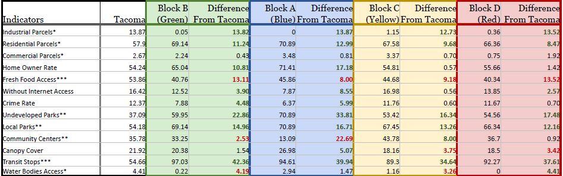
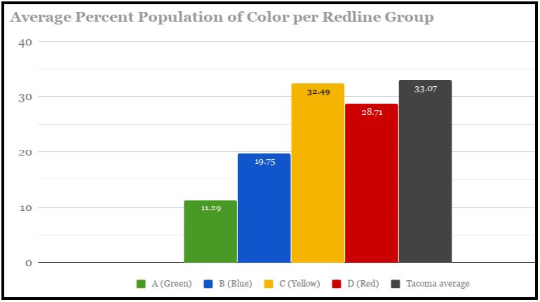

Colors of Segregation

With recent conversation surrounding loan debt and affirmative action, it is important that we reflect on the actions from our past as a nation as we move towards the future. This wealth and race basis were taken into play when the Home Owners’ Loan Corporation classified neighborhoods desirability and acceptance for loans. Neighborhoods were graded for protentional risk for default on a loan and desirability of the overall area. Although these other factors were included in their survey, the determination was heavily race based. As a result, families have lost out on the generational wealth and real estate that have propelled many different neighborhoods across America for generations.
Although the HOLC was shut down in 1954, this research examines if there have been long term effects on the long-term positive growth “hazardous” (Red) and “definitely declining” (Yellow) neighborhoods. Do areas graded red or yellow receive a lower score on a neighborhood livability index than those that were marked “Best” (Green) or “Still Desirable” (Blue)? Further, what metrics should be used to determine a neighborhoods health or livability and finally What are the racial and economic make up of these areas today? And are they significant?
Equity Index Analysis

An index was created using several factors related to the health and growth of a neighborhood. The input datasets were analyzed in one of two ways:
- Data relating to population was joined to census block groups then divided by the population to receive the rate of occurrences. The output was converted to points to preform an inverse distance weighted interpolation. Using zonal statistics, the grid was analyzed for average of occurrences within the HOLC graded areas.
- For data based on proximity, a network analysis was used. Finding the total area covered by a service, the intersection was then tabulated and divided by the shape area of redlined zones to receive the percentage that was covered. This included parks, transit access, and water bodies

Finally, Z scores were created by dividing the mean of each indicator by the standard deviation for each zone. Livability was then symbolized in a similar manner to the HOLC to show change and contrast. These steps were repeated with the city of Tacoma’s boundaries to receive a comparable average.
Results
All indicators used for index are listed in the left hand column. Livability rankings were symbolized by color, green being highest and red being the lowest scoring zones. The average percent is shown for each indicator by ranked zones and by Tacoma as a whole. Differences are shown to compare each zone to Tacoma as a whole to see any differences from what would be expected for the city.
Historical redlining appears to be a predictor of future livability. There are noticeable differences between livability scores in districts with higher grades. After calculating each areas score they were contrasted with original grading. Previously “Hazardous” (Red) graded areas showed the lowest overall scores, while “Best” (Green) zones had the highest overall scores. This implies a large gap in services and neighborhood improvements in the area.
Moving Forward
Zones were symbolized in the same color system as the HOLC to assist in easily identifying HOLC area in their relation to the results of the index. Showing how these grades might have impacted future health, not to endorse or improve a redlining system. Neither race nor income were factors in creating the index used to score areas. However, it can not be ignored that there is a racial components to these results. Areas with the highest livability scores also have a much lower average population of people of color than Tacoma as a whole (Graph 1). Long term, people of color have been socially and economically restricted to areas without high quality recourses. The results speak to the areas which most opportunities and funding should be directed, such as improving items like food access, canopy cover and home buying loans in the South end of Tacoma.
View Full Poster Read Full Paper